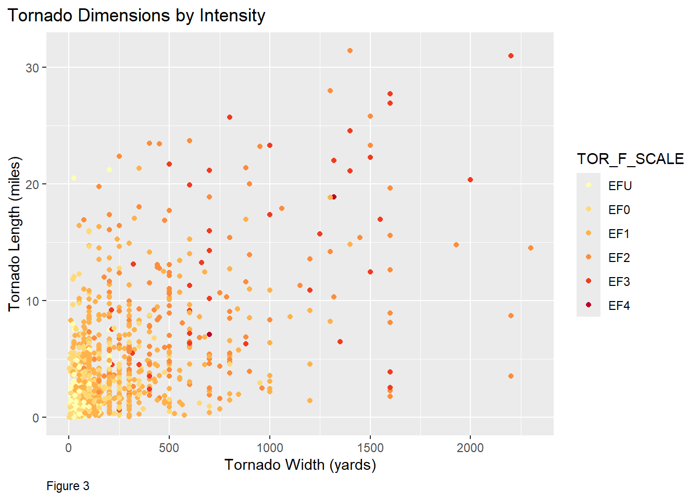
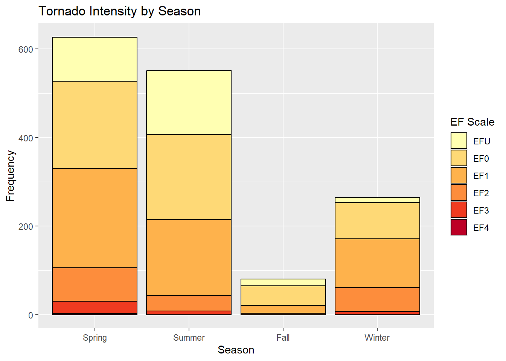

Predicting the Damage of Tornadoes
Storm Events Database
The National Oceanic and Atmospheric Administration (NOAA) National Centers for Environmental Information (NCEI) publishes an annual report of storm events in the United States. It records storm occurrences and other weather phenomena intense enough to result in deaths, injuries, significant property damage, or other economic disruption. It also records unusual weather and meteorological events that occur in connection with significant storms. NOAA Storm Events Database
Tornado Events - Variables
This analysis will focus on tornado events in the United States in 2023.
| Variable | Variable Type | Description | Units |
|---|---|---|---|
| DURATION | Integer, continuous | Tornado event duration. | Minutes |
| SEASON | Factor | Spring, Summer, Fall, Winter | N/A |
| REGION | Factor | Northeast, Southeast, Midwest, Southwest, West | N/A |
| TOR_F_SCALE | Factor | Tornado intensity | Enhanced Fujita Scale |
| TOR_LENGTH | Interval, continuous | Length of tornado while on the ground | Miles |
| TOR_WIDTH | Interval, continuous | Width of tornado while on the ground | Yards |
| DAMAGE | Integer, continuous | Total amount of resulting property and commercial damage | $ |
| CASUALTIES | Integer, continuous | Total number of direct and indirect resulting injuries and deaths | N/A |
Enhanced Fujita Scale
The Enhanced Fujita Scale, or EF Scale, is used to categorize a tornado based on estimated winds speeds and the resulting damage. The National Weather Service is the authority that assigns the tornado EF Scale category based on the highest wind speeds and degrees of damage (Figure 2).

*Of note, not pictured in the above chart is the classification “EFU.” EFU is short for EF-Unknown for tornadoes that could not be rated due to lack of damage evidence.
Data Exploration - Trends
During data exploration, a few data trends became apparent and helped lead us to establishing our research question. As described above, tornadoes are classified by wind speeds and the degree of resulting damage.
Tornado Dimensions
Figure 3 is a scatter plot of tornado dimensions, length and width, categorized by tornado classification. Not surprisingly, larger tornadoes tended to merit a higher EF Scale rating.
Figure 4 is a plot of tornado width and duration categorized by tornado classification. Not surprisingly, tornadoes with a wider path and a longer duration tended to merit a higher EF Scale rating.

While an examination of tornado dimensions helps to inform understanding of the nature of tornadoes and the EF Scale, it doesn’t help to identify at-risk communities to help them prepare for the impact of severe storms. We next explored trends by region and season for patterns that could help identify at-risk areas.
Region and Season
“Tornado season” varies by region based on climate factors. Tornadoes are most prevalent in the Midwest and Southeast United States, although they’ve been recorded in all 50 states and some territories. In Figure 4 below, “OCONUS” is short for “outside the continental United States” and includes Alaska, Hawaii, and US territories. You can see below that winter tornadoes occur mostly in the Southeast United States due to the warmer climate.
Research Questions, Methods, and Results
Based on our data exploration, we settled on four research questions:
Is there a relationship between tornado regions and the resulting intensity?
Is there a relationship between tornado seasons and the resulting intensity?
What factors predict the intensity and damage?
1. Is there a relationship between tornado regions and the resulting intensity?
Data Exploration
Add an introduction and any summary visualizations you used to begin your analysis.
Methods
Describe the analysis techniques that you employed (variable selection, classification, regression, etc)
Results
Describe your results, significance, and add any visualizations from your modeling.
2. Is there a relationship between tornado seasons and the resulting intensity?
Data Exploration
A preliminary examination of the data shows that tornadoes occur most frequently in the spring and summer months.

Methods
To explore the relationship between the season and EF Scale rating, we first used chi squared tests to determine if a relationship existed. The null hypothesis was that there was no relationship, and the alternate hypothesis that a relationship did exist between the season and EF Scale rating.
The chi squared test yielded a p-value less than 0.05, so we reject the null hypothesis.
EFU EF0 EF1 EF2 EF3 EF4
Spring 100 197 224 76 28 2
Summer 144 192 172 35 8 0
Fall 15 44 18 3 0 0
Winter 12 82 110 54 7 0
Pearson's Chi-squared test
data: hyp_table
X-squared = 121.87, df = 15, p-value < 2.2e-16Next we explored the relationship between two other measures of tornado effects: total damage in $ and total casualties, or the total number of people injured or killed during a tornado. Since these outcome variables are quantitative numeric variables, we used ANOVA testing. The null hypothesis was that there was no relationship, and the alternate hypothesis that a relationship did exist.
Df Sum Sq Mean Sq F value Pr(>F)
SEASON 3 1.336e+11 4.454e+10 2.497 0.0582 .
Residuals 1460 2.604e+13 1.784e+10
---
Signif. codes: 0 '***' 0.001 '**' 0.01 '*' 0.05 '.' 0.1 ' ' 1
59 observations deleted due to missingnessANOVA testing of the season and total damage variables yielded a p-value of greater than 0.05 but less than 0.1. In other words, there is weak evidence that the total damage of a hurricane is affected by the season.
Df Sum Sq Mean Sq F value Pr(>F)
SEASON 3 156 52.06 1.383 0.246
Residuals 1519 57195 37.65 ANOVA testing of the season and casualties variables yielded a p-value of greater than 0.1, so we fail to reject the null hypothesis and conclude that there is no relationship between the variables.
Results
From hypothesis testing, we conclude that there is a significant relationship between the predictor variable season and the outcome variable EF Scale rating. Hypothesis testing also indicates a weak relationship between the predictor variable season and the outcome variable total damage, however there is not a relationship to the outcome variable casualties.
3. What factors predict the intensity and damage?
Having examined these relationships, is it possible to model tornado intensity and damage?
Data Exploration
Methods
Results
Conclusions
This will be a summary of the significance/implications of our results, lessons learned, and recommendations for for future work.